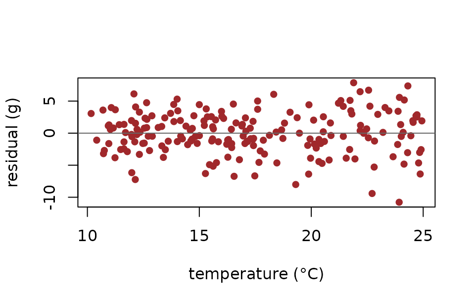

Building up: from lm to location-scale
Source:vignettes/symbolizer-ladder.Rmd
symbolizer-ladder.RmdThe idea
New to symbolizer? Skim
vignette("symbolizer")first — a five-minute quickstart on a single model. This article is the next step up: it climbs fromlmto a location-scale model so you can watch the symbolic story grow.
symbolizer turns any fitted model into a structured
symbolic specification. To see what that buys you, the easiest
path is to fit a sequence of models — each adding one feature — and
watch the symbolic specification grow rung by rung.
Throughout this article we use one dataset — body mass measured across temperature, sex, and site — and climb four rungs:
| Rung | Model | What’s new in the symbolic story |
|---|---|---|
| 1 | lm(body_mass ~ temperature) |
distribution + linear predictor |
| 2 | lm(body_mass ~ temperature + sex) |
a factor: dummy-encoded contrast |
| 3 | lmer(body_mass ~ temperature + sex + (1 | site)) | a random intercept + variance components |
| 4 | drmTMB(body_mass ~ temperature + sex + (1 | site), sigma ~ temperature) | heteroscedasticity: variance depends on temperature |
The reader-facing surface stays exactly the same: at every rung you
call symbolize(fit), then as_latex() /
symbol_table() / parameter_interpretation() to
read it. The contents of those outputs grow.
Setup — one shared dataset
library(symbolizer)
set.seed(1)
n <- 200
n_sites <- 12
sites <- factor(rep(paste0("S", sprintf("%02d", seq_len(n_sites))),
length.out = n))
site_effect <- rnorm(n_sites, 0, 1.5)[as.integer(sites)]
sex <- factor(sample(c("F", "M"), n, replace = TRUE))
temperature <- runif(n, 10, 25)
# Mean: linear in temperature, +0.7 for males, plus a site offset.
# Variance: heteroscedastic — residual SD grows with temperature.
mu_true <- 30 + 0.4 * temperature + 0.7 * (sex == "M") + site_effect
sigma_true <- exp(0.3 + 0.05 * temperature)
body_mass <- rnorm(n, mean = mu_true, sd = sigma_true)
dat <- data.frame(
body_mass = body_mass,
temperature = temperature,
sex = sex,
site = sites
)
head(dat, 4)
#> body_mass temperature sex site
#> 1 36.82290 23.85953 F S01
#> 2 32.86767 17.66440 F S02
#> 3 37.65935 13.86432 M S03
#> 4 40.17388 10.69691 F S04The “truth” the ladder will gradually uncover:
- Slope of temperature on the mean:
0.4g per °C - Sex contrast (M − F) on the mean:
+0.7g - Site-to-site SD on the mean:
1.5g - Heteroscedasticity: residual SD grows by a factor of
exp(0.05) ≈ 1.05per °C
Rung 1 — A linear model
The simplest fit. Just temperature on the mean.
The equation:
equations(sym1, notation = "index")\begin{aligned} \mathrm{body\_mass}_i \mid \mu_i,\, \sigma \sim \mathrm{Normal}(\mu_i,\, \sigma^2) \\ \mu_i = \beta_{0} + \beta_{1} \, \mathrm{temperature}_i \end{aligned}
The symbol dictionary, listing every variable the model uses:
symbol_table(sym1)| index | matrix | variable | units | role | shape | concrete | description |
|---|---|---|---|---|---|---|---|
| \mathrm{body\_mass}_i | \mathbf{body\_mass} | body_mass | NA | response | \mathbb{R}^n | \mathbb{R}^{200} | response variable |
| \mathrm{temperature}_i | — | temperature | NA | predictor | column of design matrix | column of X (length 200) | continuous predictor |
| \mu_i | \boldsymbol{\mu} | NA | NA | parameter | \mathbb{R}^n | \mathbb{R}^{200} | conditional mu of body_mass |
| \sigma | \boldsymbol{\sigma} | NA | NA | residual_sd | scalar (constant across observations) | scalar | residual standard deviation of body_mass |
| \beta_{0}, \beta_{1} | \boldsymbol{\beta} | NA | NA | coefficient | \mathbb{R}^{p_\mu} | \mathbb{R}^{2} | mu submodel coefficients |
| — | \mathbf{X} | NA | NA | design_matrix | \mathbb{R}^{n \times p_\mu} | \mathbb{R}^{200 \times 2} | mu submodel design matrix |
What each coefficient means, on each scale symbolizer
knows about:
parameter_interpretation(sym1, scale = "biological")| submodel | term_label | coefficient_role | estimate | 95% CI | biological_reading |
|---|---|---|---|---|---|
| mu | (Intercept) | intercept | 32.4 | 30.4, 34.4 * | Baseline body_mass in the reference condition |
| mu | temperature | slope | 0.303 | 0.190, 0.415 * | A unit change in temperature shifts the expected body_mass by 0.303 |
Rows marked * have a 95% confidence interval that
excludes zero (CI method: wald).
What we have so far. A distribution line for the response, a linear predictor for \mu_i, and one slope to interpret. No variance modelling beyond a single residual SD. No grouping. The biological reading is “a unit change in temperature shifts the expected body_mass by 0.303.”
Rung 2 — Adding a factor
What if mass differs systematically between sexes? Add
sex to the mean.
equations(sym2, notation = "index")\begin{aligned} \mathrm{body\_mass}_i \mid \mu_i,\, \sigma \sim \mathrm{Normal}(\mu_i,\, \sigma^2) \\ \mu_i = \beta_{0} + \beta_{1} \, \mathrm{temperature}_i + \beta_{2} \, [sex = \mathrm{M}] \end{aligned}
The equation now carries a contrast term. The symbol dictionary adds a row for the dummy-encoded contrast:
symbol_table(sym2)| index | matrix | variable | units | role | shape | concrete | description |
|---|---|---|---|---|---|---|---|
| \mathrm{body\_mass}_i | \mathbf{body\_mass} | body_mass | NA | response | \mathbb{R}^n | \mathbb{R}^{200} | response variable |
| \mathrm{temperature}_i | — | temperature | NA | predictor | column of design matrix | column of X (length 200) | continuous predictor |
| \mathrm{sex}_i | — | sex | NA | factor | column of design matrix | column of X (length 200) | factor (F [reference], M) |
| \mu_i | \boldsymbol{\mu} | NA | NA | parameter | \mathbb{R}^n | \mathbb{R}^{200} | conditional mu of body_mass |
| \sigma | \boldsymbol{\sigma} | NA | NA | residual_sd | scalar (constant across observations) | scalar | residual standard deviation of body_mass |
| \beta_{0}, \beta_{1}, \beta_{2} | \boldsymbol{\beta} | NA | NA | coefficient | \mathbb{R}^{p_\mu} | \mathbb{R}^{3} | mu submodel coefficients |
| — | \mathbf{X} | NA | NA | design_matrix | \mathbb{R}^{n \times p_\mu} | \mathbb{R}^{200 \times 3} | mu submodel design matrix |
sex is a factor with reference level F
(alphabetical). The single dummy column [sex = M] enters
the linear predictor with its own slope \beta_2. The interpretation reads the
contrast explicitly:
pi2 <- parameter_interpretation(sym2, scale = "biological")
pi2[pi2$coefficient_role == "factor_contrast", c("term_label", "estimate", "biological_reading")]| term_label | estimate | biological_reading |
|---|---|---|
| sex | 0.410 | Average body_mass differs between M and F by 0.410 |
What just got added. One row in the symbol table
(the factor contrast), one row in
parameter_interpretation(), and one term in the LaTeX. The
model class didn’t change (lm to lm), but the
symbolic story grew exactly where the model grew.
Rung 3 — Adding random effects
Sites probably differ from one another, even at the same temperature. Add a random intercept per site.
library(lme4)
#> Loading required package: Matrix
#>
#> Attaching package: 'Matrix'
#> The following object is masked from 'package:symbolizer':
#>
#> expand
fit3 <- lmer(body_mass ~ temperature + sex + (1 | site), data = dat)
sym3 <- symbolize(fit3)
equations(sym3, notation = "index")\begin{aligned} \mathrm{body\_mass}_i \mid \mu_i,\, \sigma \sim \mathrm{Normal}(\mu_i,\, \sigma^2) \\ \mu_i = \beta_{0} + \beta_{1} \, \mathrm{temperature}_i + \beta_{2} \, [sex = \mathrm{M}] + u_{site(i)} \\ u_{site} \sim \mathcal{N}(0,\, \sigma_{site}^2) \end{aligned}
Two new rows in the equation block:
-
u_{site(i)}is added to the linear predictor for \mu_i. - A second distributional line:
u_{site} ~ N(0, σ²_site).
Variance components are now first-class:
sym3$variance_components| parameter | group | term | sd_estimate | var_estimate |
|---|---|---|---|---|
| mu | site | (Intercept) | 1.17 | 1.36 |
| residual | residual | Residual | 3.29 | 10.8 |
You can read off the between-site SD and the residual SD directly. The fixed-effect interpretation rows for temperature and sex still read on the response scale; what changed is that the model now partitions the variability into between-site and within-site parts.
What just got added. A u_{site(i)}
symbol, a random-effect distributional line, and a
variance_components tibble showing the two SDs. Same
symbolize() call, richer object.
Rung 4 — Location-scale (heteroscedasticity)
Look at the residuals against temperature — they fan out:
plot(dat$temperature, residuals(fit3),
xlab = "temperature (°C)", ylab = "residual (g)",
pch = 16, col = "#a0282b")
abline(h = 0, col = "#666666")
The variance is changing with temperature. A standard mixed model forces residual variance to be constant, so the inference on \beta_1 ignores that. This is called a location-scale model (also known as distributional regression or, when the variance component is what changes, heteroscedastic regression): instead of treating the residual SD as a single fixed number, we let it depend on its own predictors with its own coefficients. Climb the last rung: fit \log(\sigma_i) = \gamma_0 + \gamma_1\, T_i.
library(drmTMB)
#>
#> Attaching package: 'drmTMB'
#> The following objects are masked from 'package:lme4':
#>
#> fixef, ranef
#> The following object is masked from 'package:base':
#>
#> beta
fit4 <- drmTMB(
drm_formula(body_mass ~ temperature + sex + (1 | site),
sigma ~ temperature),
family = gaussian(),
data = dat
)
sym4 <- symbolize(fit4)
equations(sym4, notation = "index")\begin{aligned} \mathrm{body\_mass}_i \mid \mu_i,\, \sigma_i \sim \mathrm{Normal}(\mu_i,\, \sigma_i^2) \\ \mu_i = \beta_{0} + \beta_{1} \, \mathrm{temperature}_i + \beta_{2} \, [sex = \mathrm{M}] + u_{site(i)} \\ \log(\sigma_i) = \gamma_{0} + \gamma_{1} \, \mathrm{temperature}_i \\ u_{site} \sim \mathcal{N}(0,\, \sigma_{site}^2) \end{aligned}
The equation block grew by one new line — the \log(\sigma_i) = \gamma_0 + \gamma_1\, T_i row. That single additional line is the heteroscedasticity story.
Reading on the variability scale:
pi4 <- parameter_interpretation(sym4, scale = "biological")
pi4[pi4$submodel == "sigma", c("term_label", "estimate", "biological_reading")]| term_label | estimate | biological_reading |
|---|---|---|
| (Intercept) | 0.465 | Baseline level of unexplained individual variation in body_mass |
| temperature | 0.0399 | A unit change in temperature multiplies the unexplained variability of body_mass by exp(0.0399) |
The slope \gamma_1 reads as
“residual SD multiplies by exp(γ_1) per °C”. For our
simulated data the truth was exp(0.05) ≈ 1.05, so each
additional °C inflates the residual SD by about 5 %.
Three views of the same fit
For the full educator-facing surface — equation, index expansion, matrix form, with the actual numeric arrays running alongside — ask for the three-view widget:
as_html_three_views(sym4)What happens for each observation i – the per-individual reading.
Each observation is normally distributed around a mean that may shift with the fixed-effect predictors and a group offset, with a residual SD that may also shift with its own predictors – both location and spread are modeled.
Coefficient reading. On the response scale, \hat\beta is the additive change in the mean of the response for a one-unit increase in the predictor (identity link – no back-transformation needed).
where:
- \mathrm{body\_mass}_i — response variable \mathbb{R}^{200}
- \mathrm{temperature}_i — continuous predictor column of X (length 200)
- \mathrm{sex}_i — factor (F [reference], M) column of X (length 200)
- \mu_i — conditional mu of body_mass \mathbb{R}^{200}
- \sigma_i — residual standard deviation \mathbb{R}^{200}
- \beta_{0}, \beta_{1}, \beta_{2} — mu submodel coefficients \mathbb{R}^{3}
- \gamma_{0}, \gamma_{1} — sigma submodel coefficients \mathbb{R}^{2}
- u_{site(i)} — random intercept by site scalar; \mathbb{R}^{12} in matrix form
- \sigma_{site} — between-site standard deviation scalar
Where does the variation live? Where the variation lives – each row is one variance component (shown as a share of the total when a single total variance is defined).
- site: variance = 1.28
ICC: ICC not available on this scale yet. (the residual SD varies across observations (a location-scale model), so there is no single within-group variance to form the ICC.)
Point estimates only; uncertainty not shown.
The same model in matrix form – the structural contract every textbook past chapter 4 switches to.
Each observation is normally distributed around a mean that may shift with the fixed-effect predictors and a group offset, with a residual SD that may also shift with its own predictors – both location and spread are modeled.
where:
- \mathbf{body\_mass} — response variable \mathbb{R}^{200}
- \boldsymbol{\mu} — conditional mu of body_mass \mathbb{R}^{200}
- \boldsymbol{\sigma} — residual standard deviation \mathbb{R}^{200}
- \boldsymbol{\beta} — mu submodel coefficients \mathbb{R}^{3}
- \boldsymbol{\gamma} — sigma submodel coefficients \mathbb{R}^{2}
- \mathbf{X} — mu submodel design matrix \mathbb{R}^{200 \times 3}
- \mathbf{X}_{\sigma} — sigma submodel design matrix \mathbb{R}^{200 \times 2}
- \mathbf{u}_{site} — random intercept by site scalar; \mathbb{R}^{12} in matrix form
- \sigma_{site} — between-site standard deviation scalar
The same matrix equation, with your actual numbers stacked inside the brackets – what the computer multiplies. Showing first 5 and last 2 rows of n = 200.
Each observation is normally distributed around a mean that may shift with the fixed-effect predictors and a group offset, with a residual SD that may also shift with its own predictors – both location and spread are modeled.
Matrix-form expansion of the model. Each row shows the response y_i and the corresponding row of the design matrix X (showing head and tail rows of the n total observations), with the coefficient vector beta listed below. The predicted random-effect contribution to each observation is also shown.For observation i = 1 of your data:
Stacking the same response equation for all n = 200 observations:
Left: observed vector \mathbf{body\_mass}. Middle: the prediction \mathbf{X}\hat{\boldsymbol{\beta}} + \mathbf{Z}\hat{\mathbf{u}} = \hat{\boldsymbol{\mu}}. Right: the residual vector \hat{\boldsymbol{\varepsilon}} = \mathbf{body\_mass} - \hat{\boldsymbol{\mu}}. Every row of this matrix equation is one of the response-equation rows from the worked row above.
Partial pooling. The random-effect estimates shown here (the BLUPs) are partially pooled: each group’s estimate is shrunk toward zero by an amount that grows when the group has little data and shrinks when the between-group variance is large. Groups with the least data are pulled hardest toward the overall mean.
And the \sigma submodel (no observed counterpart – \sigma’s job is to describe the spread of \hat{\boldsymbol{\varepsilon}}). For the same observation i = 1:
Stacking the same log-link equation for all n = 200 observations:
(The widget renders live in this page. In an R session,
cat(as_html_three_views(sym)) inside a
results = "asis" chunk will render the same widget into a
knitted document.)
What just happened: a recap
| Rung | Equation | New rows in symbolize output |
|---|---|---|
1: lm
|
y_i \sim \mathcal{N}(\mu_i,\, \sigma^2); \mu_i = \beta_0 + \beta_1 T_i | distribution + linear predictor |
2: lm + sex
|
\mu_i = \beta_0 + \beta_1 T_i + \beta_2 [\mathit{sex} = M] |
|
3: lmer + (1|site)
|
\mu_i = \beta_0 + \beta_1 T_i + \beta_2
[\mathit{sex} = M] + u_{site(i)}; u_{site} \sim \mathcal{N}(0,\, \sigma^2_{site}) |
|
4: drmTMB location-scale
|
as Rung 3, plus \log(\sigma_i) = \gamma_0 + \gamma_1 T_i |
|
Three observations:
-
The same
symbolize()call works on every fit. No class-specific accessors. The four fits cover three different packages (stats,lme4,drmTMB) and the user-facing surface is identical. - The equation block grows exactly where the model grows. Each rung adds one concept; the LaTeX line count tells you which.
-
The symbolic surface is incrementally readable. A
student who just learned
lmcan read Rung 1; a student who just learned random effects can read Rung 3 and see what Rung 4 adds on top.
The same approach scales to every model class symbolizer
covers — glmmTMB, brms, MCMCglmm,
sdmTMB, metafor, mgcv. The
educator-facing surface stays one verb deep.
Where to next
- For factor / interaction pedagogy in depth, see
vignette("symbolizer-factors"). - For a tour of distributional families (Student-t, Gamma, beta,
binomial, …), see
vignette("symbolizer-families"). - For meta-analysis with
metaforanddrmTMBlocation-scale (plusglmmTMB’spropto()as the related phylogenetic / structured-covariance pattern, not strict meta-analysis), seevignette("symbolizer-meta-analysis"). - For the full capability matrix and what’s planned next, see
vignette("symbolizer-roadmap").